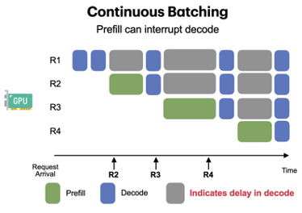
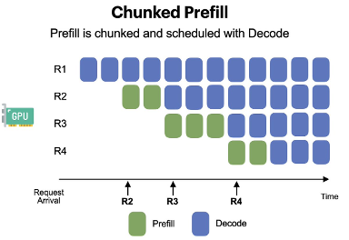

Chunked Prefill #
In the previous sections, we focused on decoding, because the unpredictable decoding length creates batching and memory challenges that continuous batching and paged attention were designed to solve. But decoding is only half of the story. Before a model can generate even a single token, it must prefill the user’s prompt into the KV cache.
Prefill is often considered a one-time cost per request, so it is easy to overlook. Yet in modern LLM applications like processing long documents, long chat histories, multimodal or retrieval-augmented (RAG) inputs, the prefill stage can be slow, memory-intensive, and disruptive to scheduling. As context lengths continue to grow, prefill becomes a major bottleneck in real deployments.
Chunked Prefill [1] addresses these issues by breaking long prefill work into smaller, well-behaved pieces that can be interleaved with decoding. This makes the system far more stable, fair, and responsive.
Why Prefilling Can Become a Major Challenge #
The default scheduling strategy of many serving systems (e.g., vLLM) prioritizes prefill over decode. The intuition behind is:
- A request cannot join the decode batch until its prefill finishes
- Finishing prefill quickly → more ready-to-decode requests
- Larger decode batches → higher throughput
This scheduling policy works well when prompts are short. However, it breaks down badly when prefill becomes large or irregular.

1. Prefill Becomes Expensive for Long Prompts #
For long inputs (chat transcripts, RAG documents, large files), prefill must run full self-attention over the input sequence.
- Self-attention compute grows as $O(T^2)$, where $T$ is the sequence length
- A sudden long prompt can cause a sharp spike in latency
Users behind a long prefill request experience delayed responses, and overall system Tail Latency (p99) becomes unpredictable.
2. One Long Prefill Blocks All Decoding #
Prefill operations are far larger than decode steps. If a long prefill is executing:
- Decode requests must wait
- Continuous batching cannot issue the next decode step
- Interactive users experience noticeable stalls
In effect, one long prefill stalls the entire GPU, defeating the benefits of continuous batching and hurting performance isolation between users.
3. Super-Long Prefills Risk Memory Exhaustion #
Deep models with many layers accumulate large intermediate activations during prefill. When sequence length is extremely long (tens of thousands of tokens), intermediate attention matrices become massive and GPUs can run out of memory mid-prefill.
Chunked Prefill: Break Long Prefill into Many Small Prefills #
The core insight of chunked prefill is simple:
Split long prefill into many small chunks and make them easy to schedule and far
less memory-intensive.

How Chunked Prefill Works #
- Tokenize the prompt and divide it into smaller segments (e.g., 512 tokens).
- Process each chunk independently through the Transformer, appending KV entries as we go.
- For each chunk, decoding phase requests can also be piggybacked.
This transforms prefill from a monolithic, blocking operation into a sequence of small, interleavable tasks, enabling more responsive and fair scheduling and restoring system stability even when prompts are extremely long.
Performance Tradeoffs #
Chunked Prefill significantly improves:
- Stability under long prompts
Avoids latency spikes and prevents long requests from stalling the GPU. - Interactive performance
Decode steps can run between chunks, preserving smooth user experience. - Scheduling flexibility
Prefill becomes preemptible, making it easier to share GPU fairly across users. - Peak memory usage
Each chunk’s intermediate activations are freed immediately, reducing OOM risk.
However, it is not without costs. Because prefill is no longer executed as one large, highly efficient operation, several downsides naturally arise:
-
Longer Time-To-First-Token (TTFT)
Prefill is split into many small iterations, each separated by scheduling overhead. Even though inter-token latency (ITL) improves, the very first token may appear later compared to a single, uninterrupted prefill pass. -
Lower Prefill Throughput
Large prefill workloads normally saturate the GPU very efficiently. Chunking the workload into smaller fragments reduces per-chunk utilization and introduces gaps so that decoding can continue meeting latency SLOs. This makes prefill throughput inherently lower.
The Fundamental Tension: Prefill vs. Decode #
Chunked prefill exposes an important fact about LLM serving:
Prefill and decode phases have fundamentally different performance profiles and
resource requirements.
-
Prefill is compute-heavy, memory-intensive, and benefits from large, uninterrupted workloads.
-
Decode is lightweight per step, latency-sensitive, and benefits from small, frequent scheduling opportunities.
When both stages must run on the same GPU with dynamic unpredictable serving workload, perfect fairness and optimal efficiency are impossible. Any improvement to decode responsiveness often comes at the expense of prefill efficiency, and vice versa.
Chunked prefill makes this tension explicit by introducing chunk size as a tunable parameter:
-
Larger chunk sizes improve prefill throughput and time-to-first-token (TTFT) but delay decode steps.
-
Smaller chunk sizes improve decode inter-token latency (ITL) and fairness but reduce prefill efficiency.
Looking Forward: Disaggregated Inference #
Later in this tutorial, we will explore Disaggregated Inference (DI) [2], a fundamentally different architectural approach where prefill and decode are executed on different devices or specialized hardware tiers. This separation mitigates much of the scheduling tension described above, allowing each phase to be optimized independently.
Chunked prefill represents a practical solution within today’s single GPU (group) serving paradigm, while disaggregated inference offers a path beyond its inherent limitations.
References #
-
Agrawal et al. “Taming Throughput-Latency tradeoff in LLM inference with Sarathi-Serve.” 18th USENIX Symposium on Operating Systems Design and Implementation. 2024.
-
Zhong et al. “DistServe: Disaggregating prefill and decoding for goodput-optimized large language model serving.” 18th USENIX Symposium on Operating Systems Design and Implementation. 2024.